Number of simulations = 1000 prop_wins_game_1
1 0.514 prop_wins_game_2
1 0.487Definitions, axioms, and examples
In order to be taken seriously as we extend our statements about data sets to larger populations, we need to be careful about how we collect data, and about how we generalize our findings. For example, these days, news sites are full of polls, as we head towards the midterm elections. You may have observed that some polling companies are more successful than others in their estimates and predictions, and consequently people pay more attention to them. Below is a snapshot of rankings of polling organizations from the well-known statistician Nate Silver’s Substack newsletter Silver Bulletin.1, and one can imagine that not many take heed of the polling done by the firms with C or worse grades. According to the website, the rankings are based on the polling organization’s “historical accuracy and methodology.”
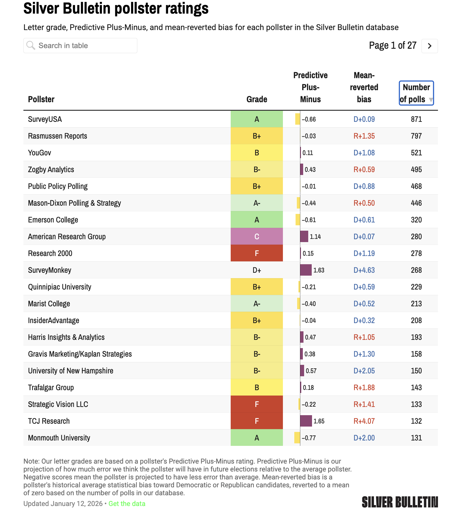
When we want to make estimates of voter proportions for a policy question, or understand the results of a clinical trial, and other such questions in which we generalize from our data sample to a larger group, we have to understand the variations in data introduced by randomness in our sampling methods, since this variability determines the error of our estimate. By variation or variability, we mean (for example) that each time we sample the voters, we will get a different group of voters and therefore, a different estimate of the proportion of voters that support a particular policy. To understand variation though, we first have to understand how probability was used to collect the data. In these notes, we are going to describe methods by which we can obtain representative samples from the target population. Since these methods are based on probability, we need to first understand the basics of probability or randomness.
We will begin our study of probability, right where the subject began - in the salons of 17th century France where high society men and women gathered to gamble, usually with dice and coins. But wait, you say - dice have been around for thousands of years… well, that is quite true. One of the oldest surviving dice artifacts are the Harappan dice, (the left most image below) - cubical terracotta dice, from the Indus Valley Civilization, about 2500 - 1900 BCE. In the middle we have the famous “Kempten Astragaloi”, ancient knucklebones discovered in Bavaria, dating back to the 1st century BCE – 1st century CE. If we venture into mythologies and legends, we have the famous “Shakuni’s dice” (on the right) which were part of a pivotal game in the ancient Indian epic Mahabharata.
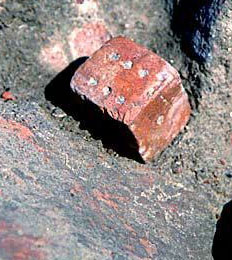
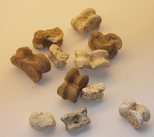
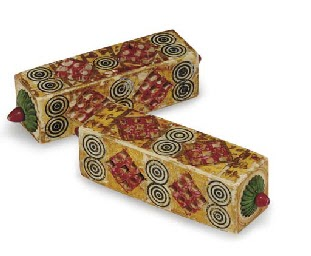
We should say, more correctly, that the study of modern probability began with a French nobleman (and gambler), the Chevalier de Méré, and his gambling woes.
Seventeenth century French gamblers would bet on anything. In particular, they would bet on a fair six-sided die landing 6 at least once in four rolls. Antoine Gombaud, aka the Chevalier de Méré, was a gambler who also considered himself something of a mathematician. He computed the chance of getting at least one six in four rolls as 2/3 by computing \((4 \times (1/6) = 4/6)\). He won quite often by betting on this event, and was convinced his computation was correct. Was it? (Spoiler alert: No! It was wrong!)
The next popular dice game was betting on at least one double six in twenty-four rolls of a pair of dice. De Méré knew that there were 36 possible outcomes when rolling a pair of dice, and therefore, assuming all the outcomes were equally likely, he computed that the chance of a double six was 1/36. Using this he concluded that the chance of at least one double six in 24 rolls was the same as that of at least one six in four rolls, that is, 2/3 (\(=24 \times 1/36\)). He happily bet on this event (at least one double six in 24 rolls) but to his shock, lost more often than he won! What was going on? Why did he win more often than lose in the first situation, and lose more often than win in the second? De Méré got so desperate after losing a lot of money that he consulted one of the great thinkers of that time, Blaise Pascal. Pascal got intrigued by the problem, and began a famous correspondence with another mathematician of the day, Pierre Fermat - and modern probability was born!
We will see later how to compute the probability of de Méré winning his bet, but for now we can estimate (guess at) the value by simulating rolling a die many times (1000 times) and looking at the proportion of times we see at least one six in 4 rolls of a fair die, and do the same with at least one double six in 24 rolls.
Number of simulations = 1000 prop_wins_game_1
1 0.514 prop_wins_game_2
1 0.487You can see here that the poor Chevalier wasn’t as good a mathematician as he imagined himself to be, and didn’t compute the chances correctly. The simulated probabilities are nowhere close to 4/6 = 2/3 (0.667), which is the probability of winning that he computed for both games!
By the end of this unit, you’ll be able to conduct simulations like these yourself in R. For today, we are going to begin by introducing the conceptual building blocks behind probability.
First, let’s establish some vocabulary -it’s much easier if all of us are thinking of the same meanings when we use probabilistic terms:
Let’s say that there are \(n\) possible outcomes in the outcome space \(\Omega\), and an event \(A\) has \(k\) possible outcomes out of those \(n\). If all the outcomes are equally likely to happen (as in a die roll or coin toss), then we say that the probability of \(A\) occurring is \(\displaystyle \frac{k}{n}\).
\[ P(A) = \frac{k}{n} \]
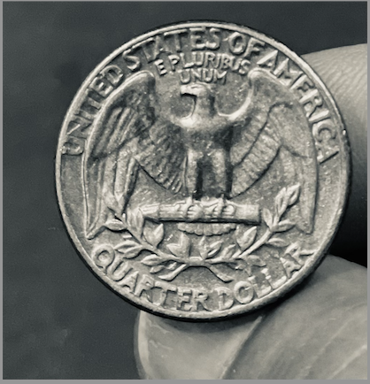
Suppose we toss a fair coin. What is the chance of the coin landing heads? Most people would guess 50%, reasoning that there are two possible things that can happen, and if the coin is fair, then they are both equally likely, making the probability of heads is 1/2 or 50%.
Here, we have thought about an event: the coin landing heads. We observed that there is one outcome in that event, and two (equally likely) outcomes in the outcome space, so we say the probability of the event, \(P(\text{Heads})\), is 1/2.
Consider rolling a fair six-sided die: six outcomes are possible so \(\Omega = \{1, 2, 3, 4, 5, 6\}\). Since the die is fair, each outcome is equally likely, with probability \(= \displaystyle \frac{1}{6}\). We can list the outcomes and their probabilities in a table.
| Outcome | \(1\) | \(2\) | \(3\) | \(4\) | \(5\) | \(6\) |
|---|---|---|---|---|---|---|
| Probability | \(\displaystyle \frac{1}{6}\) | \(\displaystyle \frac{1}{6}\) | \(\displaystyle \frac{1}{6}\) | \(\displaystyle \frac{1}{6}\) | \(\displaystyle \frac{1}{6}\) | \(\displaystyle \frac{1}{6}\) |
Let \(A\) be the event that an even number is rolled. Then the set \(A\) can be written \(\{2,4,6\}\). Since all of these outcomes are equally likely:
\[P(A) = \frac{1}{6} + \frac{1}{6} + \frac{1}{6} = \frac{3}{6}\]
In order to compute the probabilities of events, we need to set some basic mathematical rules called axioms (which are intuitively clear if you think of the probability of an event as the proportion of the outcomes that are in it). There are three basic rules that we use to compute probabilities, and here are the first two:
Before we write the third rule, we need some more definitions and notation:
For example, if you roll a standard 6-sided die, the event of “rolling an 8” is impossible. There is no 8 anywhere on a standard die, so 8 is not in the outcome space.
Example: let’s say you roll a standard 6-sided die, and define these two events:
Then the event \(A \cup B = \{1,2,3,5\}\).
Put differently, in order for a die roll to be 3-or-less, odd, or both, we need to roll a 1, 2, 3, or 5.
Same example: let’s say you roll a standard 6-sided die, and define these two events:
Then the event \(A \cap B = \{1,3\}\). These are the only outcomes in both events.
Put differently, in order for a die roll to be both odd and 3-or-less, we need to roll a 1 or a 3.
Now we consider events that don’t intersect or overlap at all, that is, they are disjoint from each other, or mutually exclusive:
A die roll cannot be both even and odd at the same time. A single coin flip cannot be both heads and tails. Such events are mutually exclusive.
If \(A\) and \(B\) are mutually exclusive, then we know that if one of them happens, the other one cannot. If a die roll is even, then it is definitely not odd. We denote this by writing \(A \cap B = \emptyset\) and read this as “\(A\) intersect \(B\) is empty”. Therefore, we have that
\[P(A \cap B) = P(\emptyset) = 0\]
The event that a die roll is even \(\{2,4,6\}\) and the event that a die roll is odd \(\{1,3,5\}\) are mutually exclusive. They have no outcomes in common, and therefore cannot both happen.
However, the event that a die roll is even \(\{2,4,6\}\) and the event that a die roll is a prime number \(\{2,3,5\}\) are not mutually exclusive. The number 2 is both even and prime, so both events could happen.
Here’s another example that might interest soccer fans: The event that Arsenal wins the English Premier League (EPL) in 2025-26, and the event that Manchester City wins the EPL in 2025-26 are mutually exclusive, since you cannot have two teams winning the premier league in the same year. However, the event that Arsenal wins the EPL in 2025–26 and the event that Manchester City wins the EPL in 2026–27 are not mutually exclusive because they are different years, so both events can occur.
Now for the third axiom:
\[P(A \cup B) = P(A) + P(B)\]
That is, for two mutually exclusive events, the probability that either of the two events might occur is the sum of their probabilities. This is called the addition rule.
For example, consider rolling a fair six-sided die, and the two events \(A\) and \(B\), where \(A\) is the event of rolling a multiple of \(5\), and \(B\) is the event that we roll a multiple of \(2\).
The only outcome in \(A\) is \(\{5\}\), while \(B\) has \(\{2, 4, 6\}\). \(P(A) = 1/6\), and \(P(B) = 3/6\). Since \(A \cap B =\emptyset\), that is, \(A\) and \(B\) have no outcomes in common, we have that
\[P(A \cup B) = P(A) + P(B) = \frac{1}{6} + \frac{3}{6} = \frac{4}{6}\]
You can only add probabilities like this IF the events are mutually exclusive. Why? Consider:
These events are NOT mutually exclusive. They can both be true if we roll a 2, 3, or 4.
If you try to compute \(P(A \cup B)\) (“A or B”) by adding \(P(A) + P(B)\), you get \(5/6 + 4/6 = 9/6\) which is 150%. You can’t have a > 100% chance of anything happening! (See Axiom 2).
Why didn’t this work? Well, you’ve double-counted the numbers that satisfy both events (2, 3, and 4). You can only add probabilities directly if you have nothing to double-count, which only happens when the events are mutually exclusive.
The complement rule
Here is an important consequence of axiom 3. Let \(A\) be an event in \(\Omega\). The complement of \(A\), written as \(A^C\), consists of all those outcomes in \(\Omega\) that are not in \(A\). Then we have the following rule:
\[P(A) + P(A^C) = 1\]
Any event will either happen (\(A\)) or it won’t (\(A^C\)). One of those has to be true. A coin flip has to be either Heads or “not Heads.” This is because \(A \cup A^C = \Omega\), and \(A \cap A^C \emptyset\).
It may feel silly, but this is a surprisingly useful rule. Sometimes a probability is really hard to calculate, but its complement is easy to calculate. So you calculate the complement instead, and subtract from 1.
Consider the penguins dataset, which has 344 observations, of which 152 are Adelie penguins and 68 are Chinstrap penguins. Suppose we pick a penguin at random, what is the probability that we would pick an Adelie penguin? What about a Gentoo penguin?
Let \(A\) be the event of picking an Adelie penguin, \(C\) be the event of picking a Chinstrap penguin, and \(G\) be the event of picking a Gentoo penguin.
Assuming that all the penguins are equally likely to be picked, we see that then \(P(A) = 152/344\), and \(P(C) = 68/344\).
Since only one penguin is picked, we see that \(A, C\), and \(G\) are mutually exclusive. This means that \(P(A)+P(C)+P(G) = 1\), since \(A, C\), and \(G\) together make up all of \(\Omega\).
Therefore the complement of \(G\), \(G^C\), which is a penguin that is not Gentoo, consists of Adelie and Chinstrap penguins, and by the addition rule,
\[P(G^C) = P(A \cup C) = P(A) + P(C) = (152+68)/344 = 220/344\]
Finally, the complement rule tells us that
\[P(G) = 1 - P(G^C) = 1 - 220/344 = 124/344\].Suppose we toss a coin twice and record the equally likely outcomes. What is \(\Omega\)? What is the chance of at least one head?
Solution: \(\Omega = \{HH, HT, TH, TT\}\), where \(H\) represents the coin landing heads, and \(T\) represents the coin landing tails. Note that since we can get exactly one head and one tail in two ways, we have to write out both ways so that all the outcomes are equally likely.
Now, let \(A\) be the event of getting at least one head in two tosses. We can do this by listing the outcomes in \(A\): \(A = \{HH, HT, TH\}\) and so \(P(A) = 3/4\).
Alternatively, we can consider \(A^C\) which is the event of no heads, so \(A^C = \{TT\}\) and \(P(A^C) = 1/4\).
In this case, \(P(A) = 1- P(A^C) = 1-1/4 = 3/4\).
Now you try: Let \(\Omega\) be the outcome space of tossing a coin three times. What is the probability of at least one head? What about exactly one head?
\(\Omega = \{HHH, HHT, HTH, THH, HTT, THT, TTH, TTT \}\).
Let \(A\) be the event of at least one head. Then \(A^C\) is the event of no heads, so \(A^C = \{TTT\}\), and \(P(A^C) = 1/8\). Therefore \(P(A) = 1-1/8 = 7/8\). Note that this is much quicker than listing and counting the outcomes in \(A\).
If \(B\) is the event of exactly one head, then \(B = \{HTT, THT, TTH\}\) and \(P(B) = 3/8\).
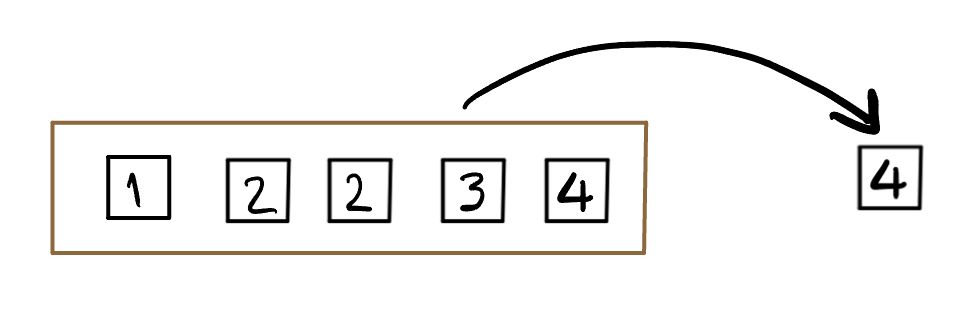
Consider the box above which has five almost identical tickets. The only difference is the value written on them. Imagine that we shake the box to mix the tickets up, and then draw one ticket without looking so that all the tickets are equally likely to be drawn3.
What is the chance of drawing an even number?
Solution:
Let \(A\) be the event of drawing an even number, then \(A = \{2, 2, 4\}\): we list 2 twice because there are two tickets marked 2, making it twice as likely as any other number. \(P(A) = 3/5\)
We often represent events using Venn diagrams. The outcome space \(\Omega\) is usually represented as a rectangle, and events are represented as circles inside \(\Omega\). Remember, \(\Omega\) is literally everything that could possibly happen. Here is a Venn diagram showing two events \(A\) and \(B\), their intersection, and their union:

Here is a Venn diagram showing two mutually exclusive events (no overlap):
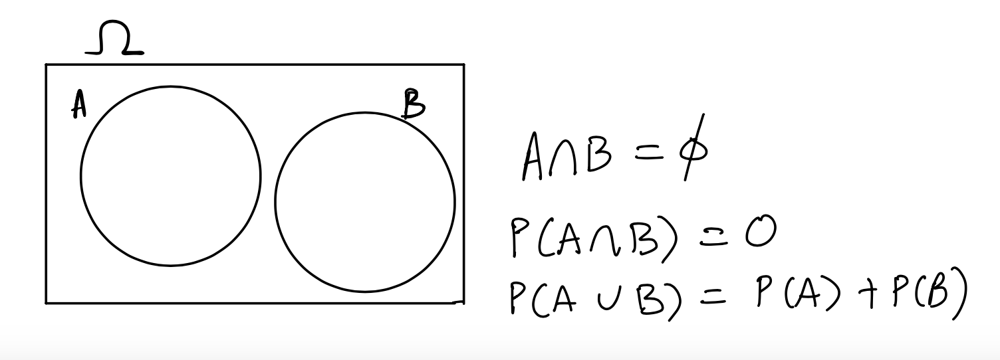
One of the simplest ways of understanding probabilities, because it is so easy to visualize, and later, understand the variations resulting from sampling, is through the box model4. A box model consists of a box with numbered tickets, from which tickets are drawn. To specify a box model, we have to say:
Consider the box above which has five almost identical tickets. The only difference is the value written on them. Imagine that we shake the box to mix the tickets up, and then draw one ticket without looking. This is to ensure that all the tickets are equally likely to be drawn5. For example, the chance of drawing a ticket labeled “4” is one in five, as there are five tickets to choose from and only one is labeled “4” etc. We will come back to this box in the next chapter. For now, what is the chance of drawing a ticket labeled “2”?
When we draw at random with replacement, we draw one ticket, and put it back before drawing another ticket. For the box in this section, if we draw twice, both times we will draw from the following box:

If we draw twice at random without replacement, then our second draw is from a different box, illustrated below:
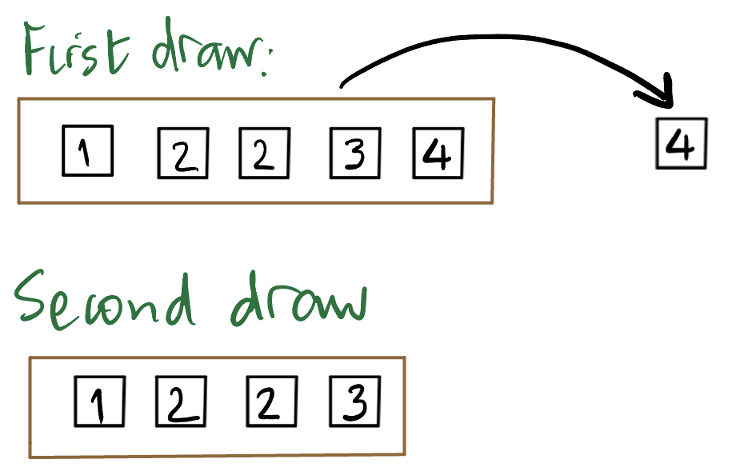
The purpose of creating a box model is to understand the variability in a “random process” such as tossing a coin over and over and counting the number of heads, or sampling voters in Texas to ask them if they will vote for James Talarico or Ken Paxton in November’s Senate elections. We do this by having the tickets represent the possible outcomes associated with the random process (of say, sampling voters), and using the variability in the tickets that are drawn, to understand the variability of the random process we are actually interested in.
Let’s review what we need in order to create a box model that will model a random process. We need to specify:
Note that these tickets should be identical in every way, except the value written on them, and assume that the tickets in the box are equally likely to be drawn (we draw without looking at the box).
Let’s practice creating boxes to model common scenarios. For each of the cases below, we should specify the four items above.
Tossing a fair coin once
What box and which tickets would you use to model a single coin toss?
We could draw one ticket from the box
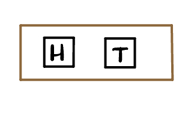
but these are not numbered! Or we could draw one ticket from the box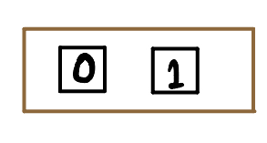
with the ticket \(\fbox{1}\) representing the coin landing heads, and \(\fbox{0}\) representing the coin landing tails. This change of numbering the ticket representing the outcome we are counting with a 1 and all other tickets with a 0 is very important, since we are classifying the outcomes into two categories, and counting the instances of one of them (in this case, the coin landing heads).Tossing a fair coin twice
We could use the same box as above:
Remember that the ticket \(\fbox{1}\) represents the outcome of a toss landing heads and \(\fbox{0}\) represents a toss landing tails (because we are counting the number of heads). We let the box be as above, and draw two tickets at random with replacement from this box. To count the number of heads in two tosses, we add the draws.Tossing an unfair coin
Set up the box model for tossing a coin which has chance of 5/6 landing heads, and counting the number of heads.
We do the same trick, of representing the outcome of heads with \(\fbox{1}\), and tails with \(\fbox{0}\). Since the coin lands heads 5 times out of 6, the box is given by:
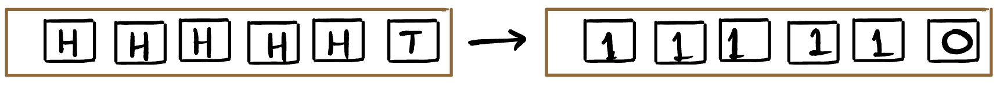
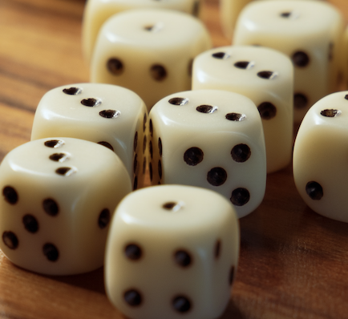
6Rolling a fair die once
The box will have six tickets as shown below, and we would draw one ticket from this box. The chance of any one of the tickets is \(1/6\).

Rolling a fair die twice
We would use the same box as in the previous example, draw twice at random with replacement from this box, then add the draws.
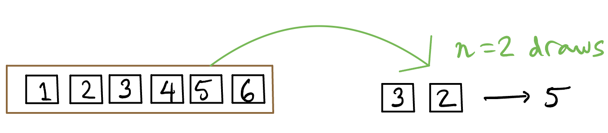
An American roulette wheel has 38 pockets, of which 18 are red, 18 black, and 2 are green. The wheel is spun, and a small ball is thrown on the wheel so that it is equally likely to land in any of the 38 pockets. Players bet on which colored or numbered pocket the ball will come to rest in. If you bet one dollar that the ball will land on red, and it does, you get your dollar back, and you win one dollar, so your gain is $1. If it doesn’t, and lands on a black or green number, you lose your dollar, and your “gain” is -$1. What would be the box model for your gain from a single spin?
Gain from a single spin
We would use the box shown below marked “Gain”. In the top box, there are 38 tickets, each representing a numbered pocket on the wheel. Draw one ticket to represent the ball landing in a particular pocket. In the second row each ticket represents a colored pocket, and we see that there are 18 red pockets, 18 black, and 2 green. We only care about the outcome ball lands in red pocket, and our gain from this. We would draw once from it, with the ticket marked \(\fbox{+1}\) representing our gain if the ball lands on a red pocket, and the ticket \(\fbox{-1}\) representing our loss if the ball doesn’t land on red. We can see that the chance of drawing a \(\fbox{+1}\) is 18 out of 38.
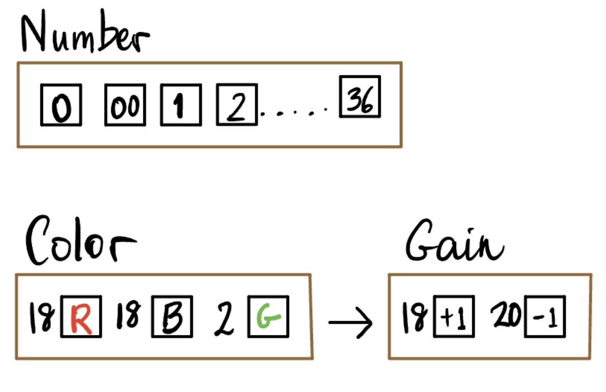
Gain from 10 spins
How would we model our net gain or winnings from 10 spins (we bet $1 on each spin, and either lose it or get it back plus $1)?

You have seen the penguins data, which measured 8 variables on a sample of 333. Here the box will contain 333 tickets, and we will draw 50 tickets at random without replacement. Note that each ticket in the box represents one penguin in the sample has information for multiple variables measured on that penguin, and we would consider only the information we are interested in. Suppose we wanted sex, species, and flipper length, to compare the flipper lengths of males and females, grouped by species.
The box would have 333 tickets, one for each penguin. Each ticket would have three things written on it: the species, sex, and flipper length in mm of the penguin. We would draw 50 tickets at random without replacement. Below is an example ticket. The left hand side has values for all 8 variables for one of the sampled penguins, but we only care about 3 of the variables. So when we draw our tickets from the box, we can think about them looking like the right hand side ticket. Now we can summarize the sample data to look at the average flipper length for males and females of each species.
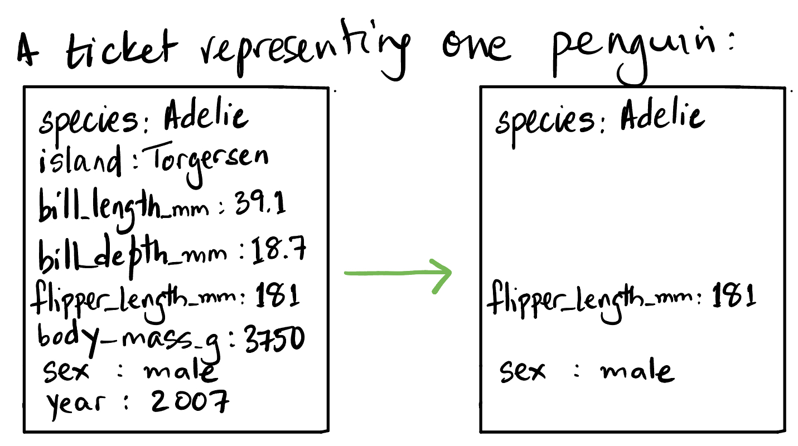
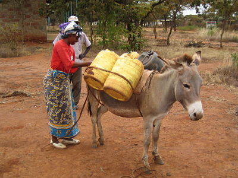
8Donkeys are economically vital in rural Kenya, being cheaper than horses or cattle, and playing all kinds of roles - used for transport, farming etc. When they fall sick, it is crucial for veterinarians to know their weight to dose their medications correctly. The problem is that they don’t usually have scales. A study showed that the vet can obtain the weight indirectly using a statistical method called a nomogram, that is, the weight of the donkey is estimated using measurements that were easier to obtain. The study obtained the data by measuring donkeys at 17 sites in 20109.
Four body measurements were made for each donkey: liveweight (kg), heart girth (cm), height (cm), and length (cm), and in addition, sex and body condition score (BCS) were recorded (the BCS categorized the donkeys according to their condition, ranging from “emaciated” to “obese”).
Suppose I want to sample 50 donkeys from this dataset, to compute their average weight and average girth (girth or heart girth is the circumference of the body, measured just behind the front legs.)
Set up the box model for this process (sampling donkeys).
The box has 544 tickets, one for each donkey. The ticket has information from all 8 variables recorded (3 categorical and 5 numerical). We only need 2 variables, so the tickets will have those two variables recorded. We draw 50 tickets from this box at random without replacement, and compute 2 averages from the draws.
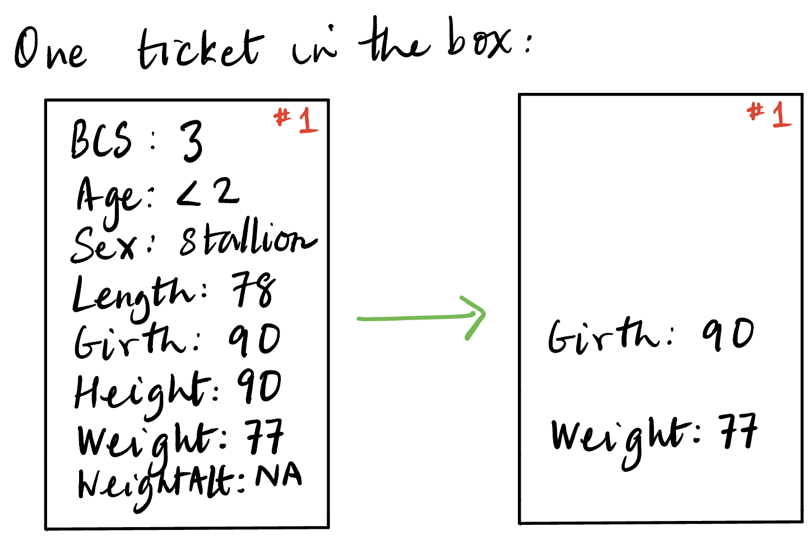
You might have heard of a website called FiveThirtyEight, which was begun by Nate Silver. That was where he originally published his pollster rankings, but ABC News (and Disney+) bought FiveThirtyEight, and then eventually shut it down. Nate Silver had moved away by then, and begun his newsletter.↩︎
The singular is die and the plural is dice. If we use the word “die” without any qualifiers, we will mean a fair, six-sided die.↩︎
We call the tickets equally likely when each ticket has the same chance of being drawn. That is, if there are \(n\) tickets in the box, each has a chance of \(1/n\) to be drawn. We also refer to this as drawing a ticket uniformly at random, because the chance of drawing the tickets are the same, or uniform.↩︎
The box model was introduced by Freedman, Pisani, and Purves in their textbook Statistics↩︎
We call the tickets equally likely when each ticket has the same chance of being drawn. That is, if there are \(n\) tickets in the box, each has a chance of \(1/n\) to be drawn. We also refer to this as drawing a ticket uniformly at random, because the chance of drawing the tickets are the same, or uniform.↩︎
Photo via unsplash.com↩︎
Photo via unsplash.com↩︎
K. Milner and J.C. Rougier, 2014. How to weigh a donkey in the Kenyan countryside. Significance, 11(4), 40–43. 74, 115 https://rss.onlinelibrary.wiley.com/doi/full/10.1111/j.1740-9713.2014.00768.x↩︎